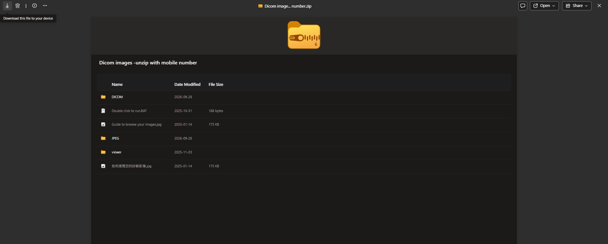
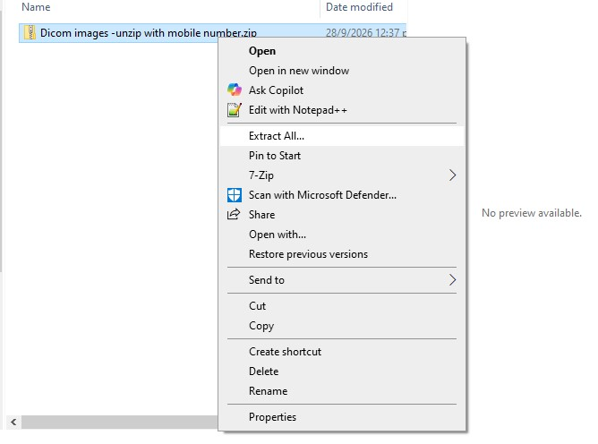
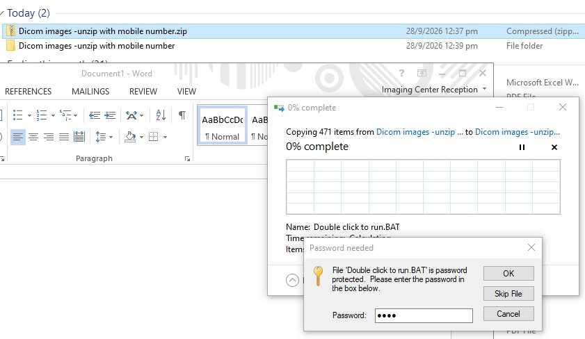
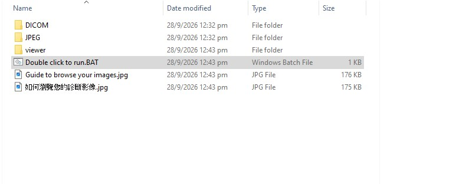

2
Download the ZIP file
Click the Download icon in the top-left corner to save the file to your computer.
Look for the ↓ arrow next to the bin icon.
Image 2

Patient Guide · Digital Imaging
Your scan results are in a secure OneDrive folder. It takes about 3 minutes on a Windows computer.
Click the link in your email to open the Microsoft OneDrive folder that holds your images.
Click the Download icon in the top-left corner to save the file to your computer.
Look for the ↓ arrow next to the bin icon.

Find the downloaded ZIP file, right-click it and select Extract All…
Usually in your Downloads folder.

1When prompted during extraction, type your mobile phone number and click OK.
Digits only. No spaces, dashes or country code.

1 2Open the extracted folder and double-click Double click to run.BAT. The image viewer will start.
Do not run it from inside the ZIP. Extract first.
